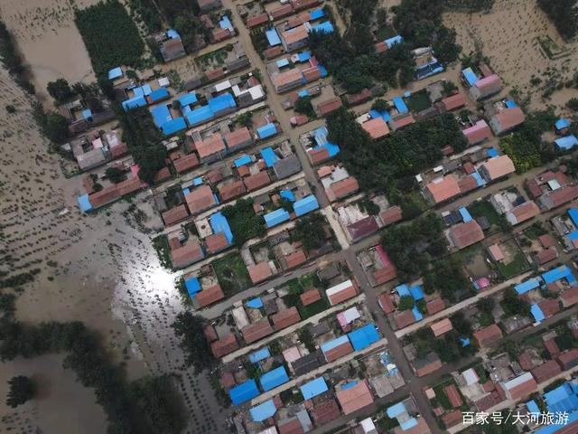
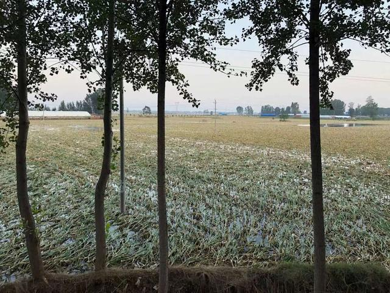
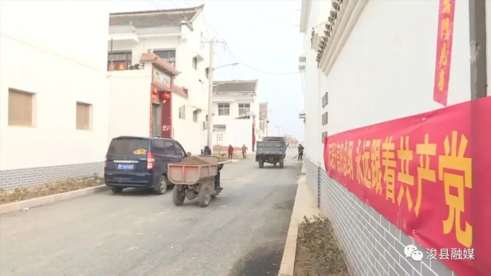

不靠天，不靠地，大家用自己勤劳的双手开出来一条新的道路。
目前，浚县工作重心已经转移到恢复重建上，已经成立了22个工作专班，全力以赴推进灾后恢复重建。已谋划灾后恢复重建和防灾减灾项目285个，总投资667亿元。新闻发布会上，相关负责人表示：采取封堵分洪口、自排、机排、疏浚排等方式，加快受灾区域排水速度。及时封堵了4个分洪口，其中最后一个淇门分洪口于8月9日凌晨3点完成封堵，比预定时间提前63个小时；组织机排队伍24支，对积水较深且排水不畅区域进行抽水作业；为乡村发放排涝设备560余套。目前，蓄滞洪区除部分低洼地外，其余积水已经全部排出(2021年8月24日)。 全力抢修道路、水利、电力、通讯等水毁设施，保障群众基本生活需要，尽快恢复正常生活秩序。目前，受损干线公路和县乡道路85条已正常通行、2条正在加紧整修，城乡公交正在逐步恢复；电力线路已全部恢复供电；通讯基站689个已恢复正常，水毁堤防和护岸140公里已加固修补，剩余水毁工程近日将全部修复。
浚县灾后航拍
对于灾后消杀相关工作，刘青指出，各镇、各单位要迅速组建环境消杀队伍，进行业务培训，立即开展环境消杀工作，做到水退到哪里就消杀到哪里，不留死角、不留盲点，消杀全覆盖，确保大灾后无大疫，保障人民群众身体健康。刘青强调，要按照“政府组织、村镇实施、专业指导、群众参与”的原则，在县防汛抗旱指挥部和消杀工作组的统一领导下，明确职业任务，压实主题责任，加强协调配合，全面统筹、深入、细化、扎实做好消杀工作；要加强领导，建立组织，严格落实责任制，明确职责任务到人，一级抓一级，层层抓落实；要强化技术培训，县疾控中心要做好镇（街道）技术骨干培训工作，确保人人懂技术、家家会消杀；要合理设置药品配置点，每个村、社区应设置消杀药品集中配置点，为群众统一提供配制好的消毒液，保证消杀效果；要加强督导检查，对领导重视不够、行动不力、措施不实、效果不好的单位，及时进行跟踪问效，对失职渎职的，严肃问责。
对于灾后是否搬迁等问题上，浚县县委常委、县政府常务副县长王远征表示：我县5个滞洪区内绝大多数房屋都受到损毁，在征求群众意见的基础上，我们谋划了蓄滞洪区灾后重建项目，修筑高台，加固护村堤，建设一批新型社区，让群众遇到洪水再也不用搬迁。我县滞洪区分洪口没有控制工程，导致分洪、封堵需要大量人力、物力，我们谋划了卫河共渠防洪提升项目，通过加固堤防、修建分洪口水闸，进一步提升防洪减灾能力。同时浚县坚持灾后恢复重建守牢防返贫底线，结合今年实施的“人人持证、技能河南”活动，浚县乡村振兴局在加大对困难群众培训力度的同时，针对灾后恢复重建工程多、项目多的实际，采取“以工代赈”方式，争取860万元，安置困难群众临时就业1720人。同时，开发乡村公益性岗位1382个，发放公益性岗位补贴660.92万元，增加困难群众收入。 目前，全县脱贫户、监测对象劳动力9615人，已全部实现就业。全县监测对象人均纯收入10505.86元，工资性收入占比53.61%，高于全省平均水平。
浚县受灾图
浚县灾后重建报道图